Bayesian modeling of comparative judgment data with R and Stan
![]()
2025-10-31
1. Introduction
1. Introduction
The Bradley-Terry-Luce (BTL) model [1, 2] offers a simple method for measuring traits and conducting statistical inference from comparative judgment (CJ) data [3, 4].
Its simplicity stems from two features:
1. Introduction
To address these concerns, Rivera et al. [8] proposed The Information-Theoretical model for CJ. The approach,
1. Extends the general form of Thurstone’s law of comparative judgment [5, 9], combining Thurstone’s core theoretical principles with key CJ assessment design features.
2. Enables the development of models tailored to the assumed data-generating process of the CJ system under study, thus:
- Eliminating the need to rely on the simplifying assumptions of the BTL model,
- Removing the dependence on ad hoc hypothesis-testing procedures.
Nevertheless, although approach has the potential to yield reliable trait estimates and accurate statistical inferences, this promise still needs to be empirically tested.
2. Research goals
2. Research goals
Thus, this study has two overarching goals:
To show how apply the Information-Theoretical model for CJ to a simulated dataset,
A tutorial component, offering detailed guidance on data simulation, prior and model specification, estimation, and interpretation using the software
RandStan.
Once a sufficiently trustworthy model is found in goal 1,
Evaluate whether the approach yield accurate and reliable trait estimates and inference parameters,
A model validation component benchmarked against the classical BTL analysis.
3. A tale of two analytical approaches
3. A tale of two analytical approaches
CJ data can be analyzed under two analytical approaches:
The classical BTL analysis (hereafter, CBTL analysis) [4, 10],
which relies on a sequence of separate methods to estimate traits and draw inferences,
The Information-Theoretical model for CJ (hereafter, ITCJ analysis) [8],
which employs a single, systematic, and integrated approach for the same two purposes.
3.1 The CBTL analysis
3.1 The CBTL analysis
This approach relies on a sequence of separate methods, each with different purposes [4, 10–14]. Specifically, the CBTL analysis:
- Apply the BTL model to data, e.g.,
- To estimate the traits of the stimuli (mean and standard error)
- To generate the model residuals and conduct misfit analysis
- Generate summaries or apply (multilevel) regression to the stimuli’ mean trait estimates, e.g.,
- To aggregate the trait of the stimuli at the individual level
- To separate the variability in between- and within-individuals
- To summarize or conduct inferences at the level of stimuli and individuals
- Generate summaries or apply (multilevel) regression to the model residuals, e.g.,
- To aggregate the remaining variability at the judges level
- To separate the remaining variability in between- and within-judges
- To summarize or conduct inferences at the level of judges, including the investigation of bias
3.2 The ITCJ analysis
3.2 The ITCJ analysis
This approach applies a single, systematic, and integrated approach to estimate traits and conduct inferences [8]. In broad terms, the ITCJ analysis:
- Begins with the general CJ structure proposed by Rivera et al. [8] (see next slide),
- Adapts this structure to the assumed data-generating process of the CJ system under study,
- Develops one or more bespoke statistical models for analyzing the CJ system.
- Use the one (or more) statistical model(s) to estimate traits and conduct inferences.
With these steps a researcher can:
- Estimate the traits of the stimuli and individuals (full distribution)
- Assess the variability and conduct inferences at the stimuli and individual levels
- Estimate the biases of the judges and judgments (full distribution)
- Assess the variability and conduct inferences at the judgments and judges levels
- Conduct outlier identification for stimuli, individuals, judgments, and judges
3.2 The ITCJ analysis
The general CJ structure proposed by Rivera et al. [8] takes the following form:

\[ \begin{aligned} O_{R} & := f_{O}(D_{R}, S, C) \\ D_{R} & := f_{D}(T_{IA}, B_{JK}) \\ T_{IA} & := f_{T}(T_{I}, X_{IA}, e_{IA}) \\ T_{I} & := f_{T}(X_{I}, e_{I}) \\ B_{JK} & := f_{B}(B_{J}, Z_{JK}, e_{JK}) \\ B_{J} & := f_{B}(Z_{J}, e_{J}) \\ e_{I} & \:\bot\:\{ e_{J}, e_{IA}, e_{JK} \} \\ e_{J} & \:\bot\:\{ e_{IA}, e_{JK} \} \\ e_{IA} & \:\bot\:e_{JK} \end{aligned} \]
3.2 The Information-Theoretical model for CJ
Leading to the general probabilistic and statistical model:
\[ \begin{aligned} O_{R} & := f_{O}(D_{R}, S, C) \\ D_{R} & := f_{D}(T_{IA}, B_{JK}) \\ T_{IA} & := f_{T}(T_{I}, X_{IA}, e_{IA}) \\ T_{I} & := f_{T}(X_{I}, e_{I}) \\ B_{JK} & := f_{B}(B_{J}, Z_{JK}, e_{JK}) \\ B_{J} & := f_{B}(Z_{J}, e_{J}) \\ \\ e_{IA} & \:\bot\:\{ e_{I}, e_{J}, e_{JK} \} \\ e_{I} & \:\bot\:\{ e_{J}, e_{JK} \} \\ e_{J} & \:\bot\:e_{JK} \end{aligned} \]
\[ \begin{aligned} & P( O_{R} \mid D_{R}, S, C ) \\ & P( D_{R} \mid T_{IA}, B_{JK} ) \\ & P( T_{IA} \mid T_{I}, X_{IA}, e_{IA} ) \\ & P( T_{I} \mid X_{I}, e_{I} ) \\ & P( B_{JK} \mid B_{J}, Z_{JK}, e_{JK} ) \\ & P( B_{J} \mid Z_{J}, e_{J} ) \\ \\ & P( e_{IA} ) P( e_{I} ) P( e_{J} ) P( e_{JK} ) \\ \\ \\ \end{aligned} \]
\[ \begin{aligned} O_{R} & \overset{iid}{\sim} \text{Bernoulli} \left[ \text{inv_logit}( D_{R} ) \right] \\ D_{R} & = \left( T_{IA}[i,a] - T_{IA}[h,b] \right) + B_{JK}[j,k] \\ T_{IA} & = T_{I} + \beta_{XA} X_{IA} + e_{IA} \\ T_{I} & = \beta_{XI} X_{I} + e_{I} \\ B_{JK} & = B_{J} + \beta_{ZK} Z_{JK} + e_{JK} \\ B_{J} & = \beta_{ZJ} Z_{J} + e_{J} \\ \\ \boldsymbol{e} & \sim \text{Multi-Normal}( \boldsymbol{\mu}, \boldsymbol{\Sigma} ) \\ \boldsymbol{\Sigma} &= \boldsymbol{V} \boldsymbol{Q} \boldsymbol{V} \\ \\ \end{aligned} \]
With the following constraints to solve indeterminacies in location, orientation, and scale of \(T_{I}\), \(T_{IA}\), \(B_{J}\), and \(B_{JK}\) [15]:
\[ \boldsymbol{\mu} = [0, 0, 0, 0]^{T}; \quad \boldsymbol{Q} = \begin{bmatrix} 1 & 0 & 0 & 0 \\ 0 & 1 & 0 & 0 \\ 0 & 0 & 1 & 0 \\ 0 & 0 & 0 & 1 \end{bmatrix}; \quad \boldsymbol{V} = \begin{bmatrix} s_{XI} & 0 & 0 & 0 \\ 0 & s_{A} & 0 & 0 \\ 0 & 0 & s_{ZJ} & 0 \\ 0 & 0 & 0 & s_{K} \end{bmatrix}; \quad \sum_{g=1}^{3} s_{XI}[g]/3 = 1; \quad 0< s_{A} < 1; \quad \sum_{g=1}^{3} s_{ZJ}[g]/3 = 1; \quad 0< s_{K} < 1 \]
4. Methods
4. Methods
To meet the tutorial and model validation goals, this study follows the Bayesian (research) workflow [16–22]:
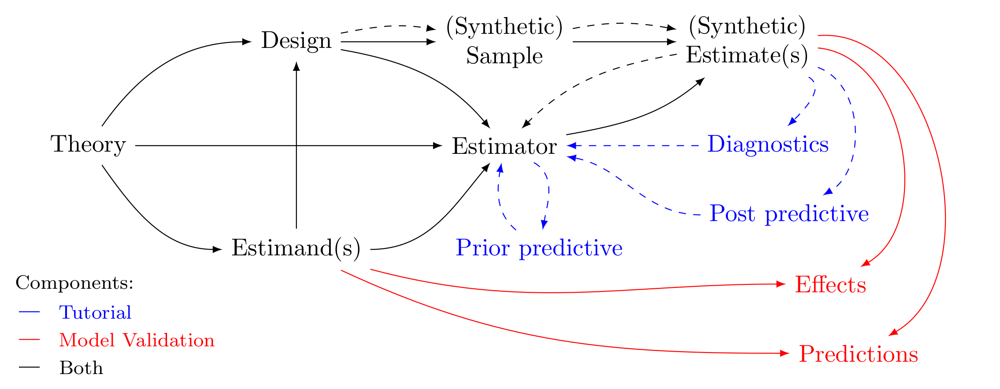Figure 4: Bayesian (research) workflow.
4. Methods
Specifically, the study follows these steps (overarching goals in parenthesis):
Theory \(\rightarrow\) Estimand(s) \(\rightarrow\) Design (Tutorial and Model validation)
Considering three steps:
- Define a CJ structure of interest and explicitly state its assumptions from relevant literature;
- Specify the estimand(s) of interest and provide formal definitions for each target parameter;
- Simulate a synthetic conceptual population that reflects the defined structure and assumptions;
Design \(\rightarrow\) Sample (Tutorial and Model validation)
Generate a synthetic random sample and comparison datasets from the conceptual population simulated in step \(1\);
{Theory, Design, Estimand(s)} \(\rightarrow\) Estimator (Tutorial and Model validation)
Specify models for analyzing the synthetic random comparison dataset using both the CBTL and the ITCJ analysis;
Estimator \(\rightarrow\) Prior predictive (Tutorial)
Perform prior predictive checks;
4. Methods
{Estimator, Sample} \(\rightarrow\) Estimate(s) (Tutorial and Model validation)
Apply both the CBTL and ITCJ methods to the synthetic random comparison dataset;
Estimate(s) \(\rightarrow\) {Diagnostic, Post predictive} (Tutorial)
Assess the quality of the models and estimate(s) in terms of stationarity, convergence, mixing, parameter recovery, in-sample predictive accuracy, and approximate out-of-sample fit;
{Diagnostic, Post predictive} \(\rightarrow\) Estimator (Tutorial)
Incrementally refine the statistical model repeating steps 3–6 until a sufficiently trustworthy model is obtained according to the criteria outlined in step 6;
Estimator \(\rightarrow\) Estimate(s) \(\rightarrow\) Effects \(\leftarrow\) Estimand(s) (Model validation)
Generate the estimate(s) of interest for the synthetic random comparison dataset using both the CBTL and ITCJ analysis, and interpret the results;
Estimator \(\rightarrow\) Estimate(s) \(\rightarrow\) Predictions \(\leftarrow\) Estimand(s) (Model validation)
Generate predictions for the synthetic comparison dataset using both the CBTL and ITCJ analysis, and compare their in-sample predictive accuracy, and approximate out-of-sample fit.
4.1 From Theory to Design: Steps 1a-1c
4.1 From Theory to Design: Steps 1a-1c
The conceptual population simulation is based on the data characteristics and findings reported by Boonen et al. [12]:
Regarding the data characteristics, the study:
- Includes multiple stimuli nested within multiple individuals,
- Considers individuals with different characteristics (e.g., age, hearing status),
- Assigns each judge to make only one comparison per stimulus pair,
- Involves judges who differ in characteristics (e.g., experience level),
- Selects stimuli, individuals, and judges using a (pseudo-)random sampling algorithm,
- Involves multiple judges performing multiple comparisons, assigned through a random comparison algorithm.
Regarding the study findings, the study report that:
- Individuals with different hearing statuses differ in both their average latent trait levels and their variability,
- There is more unexplained variability between individuals than within individuals (i.e., at the stimulus level),
- No evidence of systematic judge bias was found (although it was not tested but treated as a model assumption),
- Judges’ experience levels did not account for differences in mean latent traits between stimuli, but differences in their variabilities were not assessed.
4.1 From Theory to Design: Steps 1a-1c
Thus, adapting the general CJ structure proposed by Rivera et al.’s [8] to the data characteristics reported by Boonen et al. [12] leads to the following conceptual population data-generating process:
\[ \begin{aligned} O_{R} & := f_{O}(D_{R}, S, C) \\ D_{R} & := f_{D}(T_{IA}, B_{JK}) \\ T_{IA} & := f_{T}(T_{I}, e_{IA}) \\ T_{I} & := f_{T}(X_{I}, e_{I}) \\ B_{J} & := f_{B}(Z_{J}, e_{J}) \\ \\ e_{IA} & \:\bot\:\{ e_{I}, e_{J} \} \\ e_{I} & \:\bot\:\{ e_{J} \} \end{aligned} \]
4.1 From Theory to Design: Steps 1a-1c
Moreover, integrating the assumptions derived from Boonen et al. [12] leads to the following statistical data-generating process:
\[ \begin{aligned} O_{R} & := f_{O}(D_{R}, S, C) \\ D_{R} & := f_{D}(T_{IA}, B_{JK}) \\ T_{IA} & := f_{T}(T_{I}, e_{IA}) \\ T_{I} & := f_{T}(X_{I}, e_{I}) \\ B_{J} & := f_{B}(Z_{J}, e_{J}) \\ \\ e_{IA} & \:\bot\:\{ e_{I}, e_{J} \} \\ e_{I} & \:\bot\:\{ e_{J} \} \end{aligned} \]
\[ \begin{aligned} & P( O_{R} \mid D_{R}, S, C ) \\ & P( D_{R} \mid T_{IA}, B_{JK} ) \\ & P( T_{IA} \mid T_{I}, e_{IA} ) \\ & P( T_{I} \mid X_{I}, e_{I} ) \\ & P( B_{J} \mid Z_{J}, e_{J} ) \\ \\ & P( e_{IA} ) P( e_{I} ) P( e_{J} ) \end{aligned} \]
\[ \begin{aligned} O_{R} & \overset{iid}{\sim} \text{Bernoulli} \left[ \text{inv_logit}( D_{R} ) \right] \\ D_{R} & = \left( T_{IA}[i,a] - T_{IA}[h,b] \right) + B_{JK}[j,k] \\ T_{IA} & = T_{I} + e_{IA} \\ T_{I} & = \beta_{XI} X_{I} + e_{I} \\ B_{J} & = \beta_{ZJ} Z_{J} + e_{J} \\ \\ \boldsymbol{e} & \sim \text{Multi-Normal}( \boldsymbol{\mu}, \boldsymbol{\Sigma} ) \\ \boldsymbol{\Sigma} &= \boldsymbol{V} \boldsymbol{Q} \boldsymbol{V} \end{aligned} \]
With the following parameter assumptions:
\[ \begin{split} X_{I} &= \{ X_{Ic}, X_{Id}[g=1], X_{Id}[g=2], X_{Id}[g=3] \} \\ Z_{J} &= \{ Z_{Jd}[g=1], Z_{Jd}[g=2], Z_{Jd}[g=3] \} \\ \beta_{XI} & = \{ \beta_{XIc}, \beta_{XId[g=1]}, \beta_{XId[g=2]}, \beta_{XId[g=3]} \} = \{ 0.1, 1, 0, -1\} \\ \beta_{ZJ} &= \{ \beta_{ZJd[g=1]}, \beta_{ZJd[g=2]}, \beta_{ZJd[g=3]} \} = \{ 0, 0, 0\} \end{split} \]
\[ \begin{split} s_{XI[g]} &= \{ s_{XId[g=1]}, s_{XId[g=2]}, s_{XId[g=3]} \} = \{ 1.5, 0.75, 0.75\} \\ s_{ZJ} &= \{ s_{ZJd[g=1]}, s_{ZJd[g=2]}, s_{ZJd[g=3]} \} = \{ 0.5, 1, 1.5\} \\ s_{A} &= 0.2 \\ \boldsymbol{\mu} &= [0, 0, 0]^{T}; \quad \boldsymbol{Q} = \begin{bmatrix} 1 & 0 & 0 \\ 0 & 1 & 0 \\ 0 & 0 & 1 \end{bmatrix} ; \boldsymbol{V} = \begin{bmatrix} s_{XI} & 0 & 0 \\ 0 & s_{A} & 0 \\ 0 & 0 & s_{ZJ} \end{bmatrix} \end{split} \]
4.1 From Theory to Design: Steps 1a-1c
In layman terms:
- No stimuli characteristics \((X_{IA})\) are assumed to affect the comparisons;
- Stimuli latent trait residual variability is smaller than average individual latent trait residual variability \((s_{A} = 0.2 < 1)\);
- Individual characteristics \((X_{I})\) include a continuous variable \((X_{Ic})\) for the age of children, and a categorical variable with three levels representing hearing status groups: normal-hearing (NH, \(X_{Id}[g=1]\)), hearing-impaired with hearing aids (HI-HA, \(X_{Id}[g=2]\)), and hearing-impaired with cochlear implants (HI-CI, \(X_{Id}[g=3]\)) children;
- There is a “small” [23, 24] but increasing effect of age \((\beta_{XIc})\) on the mean latent trait of individuals;
- There are “very large” [23, 24] differences in the mean latent trait across hearing status groups \((\beta_{XId[g=1]} > \beta_{XId[g=2]} > \beta_{XId[g=3]})\);
- Individual latent trait residual variability differs by groups, i.e., \(s_{XId[g=1]} > s_{XId[g=2]} = s_{XId[g=3]}\), with \(\sum_{g=1}^{3} s_{XId[g]}/3 = 1\);
- Judges make only one comparison; thus, there are no judgment-level characteristics \((Z_{JK})\), judgement-level effects \((\beta_{ZJK})\), or residual judgment variability \((p_{JK})\);
- Judges characteristics \((Z_{J})\) include a categorical variable with three levels representing judge groups: audiologist (AU, \(Z_{Jd}[g=1]\)), primary teachers (PT, \(Z_{Jd}[g=2]\)), and inexperienced listeners (IL, \(Z_{Jd}[g=3]\));
- Judges’ mean latent biases across judge groups are equal to zero \((\beta_{ZJd[g=1]}=\beta_{ZJd[g=2]}=\beta_{ZJd[g=3]}=0)\);
- However, judges exhibit more or less bias depending on their experience, i.e., \((s_{ZJd[g=1]}=0.5) < (s_{ZJd[g=2]} = 1) < (s_{ZJd[g=3]} = 1.5)\), with \(\sum_{g=1}^{3} s_{ZJ[g]}/3 = 1\);
- Residual latent errors \((\boldsymbol{e})\) are centered around zero with zero correlation \((\boldsymbol{\mu}, \boldsymbol{Q})\).
4.1 From Theory to Design: Steps 1a-1c
From the simulation parameters, we can also define the estimands of interest:
- The conditioned expected change in the individuals’ mean latent trait for one additional year of age \((\beta_{XIc})\);
- The conditioned expected differences in mean latent traits between NH and HI-HA children \((\beta_{XId[g=1]} - \beta_{XId[g=2]})\), NH and HI-CI children \((\beta_{XId[g=1]} - \beta_{XId[g=3]})\), and HI-HA versus HI-CI children \((\beta_{XId[g=2]} - \beta_{XId[g=3]})\);
- The conditioned expected differences in mean latent bias between AU and PT judges \((\beta_{ZJd[g=1]} - \beta_{ZJd[g=2]})\), AU and IL judges \((\beta_{ZJd[g=1]} - \beta_{ZJd[g=3]})\), and PT and IL judges \((\beta_{ZJd[g=2]} - \beta_{ZJd[g=3]})\);
- The latent trait residual variability of NH, HI-HA, and HI-CI children, i.e., \(s_{XId[g=1]}\), \(s_{XId[g=2]}\), and \(s_{XId[g=3]}\), respectively;
- The conditioned expected differences in residual variability of the latent trait between NH and HI-HA children \((s_{XId[g=1]} - s_{XId[g=2]})\), NH and HI-CI children \((s_{XId[g=1]} - s_{XId[g=3]})\), and HI-HA versus HI-CI children \((s_{XId[g=2]} - s_{XId[g=3]})\);
- The latent bias residual variability of AU, PT, and IL judges, i.e., \(s_{ZJd[g=1]}\), \(s_{ZJd[g=2]}\), and \(s_{ZJd[g=3]}\), respectively;
- The conditioned expected differences in residual variability of the latent bias between AU and PT judges \((s_{ZJd[g=1]} - s_{ZJd[g=2]})\), AU and IL judges \((s_{ZJd[g=1]} - s_{ZJd[g=3]})\), and PT and IL judges \((s_{ZJd[g=2]} - s_{ZJd[g=3]})\);
- The residual variability of the stimuli latent trait \((s_{A})\);
- Latent traits \(T_{IA}\), \(T_{I}\), and \(B_{J}\).
4.2 From Design to Sample: Step 2
4.2 From Design to Sample: Step 2
We generate a synthetic random sample and comparison datasets from the conceptual population in Step 1.
More specifically, for the sampling \((S)\) and comparison \((C)\) mechanisms illustrated in Figure 5, sample size calculations were conducted (see Section 30), and the following design was adopted:
- A sample of \(54\) individuals, divided into three hearing status groups: \(40\) NH \((X_{Id}[g=1])\), \(7\) HI-HA \((X_{Id}[g=2])\), and \(7\) HI-CI \((X_{Id}[g=3])\) children;
- A sample of \(10\) stimuli per individual;
- A sample of \(60\) judges, divided into three groups: \(10\) AU \((Z_{Jd}[g=1])\), \(10\) PT \((Z_{Jd}[g=2])\), and \(40\) IL \((Z_{Jd}[g=3])\);
- Judges conduct only one-comparison of the same stimulus pair (i.e., design is NOT a repeated measures design [25])
- Each stimulus is compared \(20\) times in total against other stimuli, across all judges.
4.3 From Estimator and Sample to Estimate(s): The analysis approaches in step 5
4.3 From Estimator and Sample to Estimate(s): The analysis approaches in step 5
The study applies two data analysis approaches for the simulated CJ data (as described in Section 3):
Both analysis are conducted using R version 4.2.2 [26], with:
- Additional
Rpackages for data manipulation and visualization:tidyverse[27],igraph[28, 29], andRColorBrewer[30]; - Specific user-defined functions (
UDFs) to facilitate data manipulation, visualization, model summarization, diagnostics, and prediction from the approaches (all are provided in the main document).
4.3 From Estimator and Sample to Estimate(s): The analysis approaches in step 5
Notably, each brms multilevel regression model within the CBTL analysis and each Bayesian model within the ITCJ analysis were estimated using:
- Four Markov chains of \(4000\) iterations, each with distinct starting values, where the first \(2000\) iterations served as warm-up, and the remaining \(2000\) were used as posterior samples (for a total of \(8000\) posterior samples).
4.3.1 From Estimator and Sample to Estimate(s): The CBTL analysis in step 5
4.3.1 From Estimator and Sample to Estimate(s): The CBTL analysis in step 5
Specifically, the CBTL analysis [4, 10–14, 31]:
- To estimate the traits of the stimuli \((\text{ability}_{i,a})\)
- To generate the model residuals \((\text{res}_{j,a,b})\) and conduct misfit analysis.
Fits a multilevel regression on the residuals using the
brmspackage [34, 35],\(\text{res}_{j,a,b} \sim -1 + ZJd + (1 | Js)\)
- To test hypothesis of differences in mean residuals between groups of judges, i.e., \(\beta_{ZJd[g=1]} - \beta_{ZJd[g=2]}\), \(\beta_{ZJd[g=1]} - \beta_{ZJd[g=3]}\), and \(\beta_{ZJd[g=2]} - \beta_{ZJd[g=3]}\);
- To assess the variability within- and between-judges \((1 | Js)\), where the former has no direct equivalent parameter, while latter corresponds to \(s_{ZJ}\)\(^{*}\).
- To aggregate model residuals into judges biases \((B_{J})\)
\(*\) By model assumptions, the CBTL analysis only considers one variability parameter for judges, i.e., \(s_{ZJ}\), versus multiple variability parameters defined by the experience of the judges, i.e., \(s_{ZJd}\).
4.3.1 From Estimator and Sample to Estimate(s): The CBTL analysis in step 5
Specifically, the CBTL analysis [4, 10–14, 31]:
Fits a multilevel regression on the stimulus’ trait estimates with the
brmspackage [34, 35],\(\text{ability}_{i,a} \sim -1 + XIc + XId + (1 | Is)\)
- To estimate the effect of age on the mean latent trait, i.e, \(\beta_{XIc}\)
- To test hypothesis of differences in mean latent traits between groups of children, i.e., \(\beta_{XId[g=1]} - \beta_{XId[g=2]}\), \(\beta_{XId[g=1]} - \beta_{XId[g=3]}\), and \(\beta_{XId[g=2]} - \beta_{XId[g=3]}\)
- To assess the variability within and between children \((1 | Is)\), corresponding to the parameters \(s_{A}\) and \(s_{XI}\)\(^{*}\), respectively
- To aggregate stimuli traits into individual level \((T_{I})\)
Prior selection for the multilevel regression models in Steps \(2\) and \(3\) relied on prior predictive checks, the results of which are presented in Section 13.
\(*\) By model assumptions, the CBTL analysis only considers one variability parameter for individuals, i.e., \(s_{XI}\), versus multiple variability parameters defined by the individuals’ groups, i.e., \(s_{XId}\).
4.3.2 From Estimator and Sample to Estimate(s): The ITCJ analysis in step 5
4.3.2 From Estimator and Sample to Estimate(s): The ITCJ analysis in step 5
In contrast, the ITCJ analysis [8], fits six \((6)\) increasingly complex CJ models, using:
Similarly, prior selection for the six ITCJ models relied on prior predictive checks, the results of which are presented in Section 13.
4.3.2 From Estimator and Sample to Estimate(s): The ITCJ analysis in step 5
The first model only considers the stimulus’ traits\(^{*}\).
\[ \begin{aligned} O_{R} & := f_{O}(D_{R}, S, C) \\ D_{R} & := f_{D}(T_{IA}) \\ T_{IA} & := f_{T}(e_{IA}) \\ \end{aligned} \]
\[ \begin{aligned} & P( O_{R} \mid D_{R}, S, C ) \\ & P( D_{R} \mid T_{IA} ) \\ & P( T_{IA} \mid e_{IA} ) \\ & P( e_{IA} ) \end{aligned} \]
\[ \begin{aligned} O_{R} & \overset{iid}{\sim} \text{Bernoulli} \left[ \text{inv_logit}( D_{R} ) \right] \\ D_{R} & = \left( T_{IA}[i,a] - T_{IA}[h,b] \right) \\ T_{IA} & = e_{IA} \\ e_{IA} & \sim \text{Normal}( 0, s_{A} ) \end{aligned} \]
\[ \begin{split} s_{A} & \sim \text{Exponential}( 1/5 ) \end{split} \]
\(*\) This model is akin to Step \(1\) of the CBTL analysis, but with a different prior.
4.3.2 From Estimator and Sample to Estimate(s): The ITCJ analysis in step 5
Building on the first, the second model integrates the hierarchical structural component that captures the nesting structure of stimulus within individuals\(^{*}\).
\[ \begin{aligned} O_{R} & := f_{O}(D_{R}, S, C) \\ D_{R} & := f_{D}(T_{IA}) \\ T_{IA} & := f_{T}(T_{I}, e_{IA}) \\ T_{I} & := f_{T}(e_{I}) \\ e_{IA} & \:\bot\:e_{I} \end{aligned} \]
\[ \begin{aligned} & P( O_{R} \mid D_{R}, S, C ) \\ & P( D_{R} \mid T_{IA} ) \\ & P( T_{IA} \mid T_{I}, e_{IA} ) \\ & P( T_{I} \mid e_{I} ) \\ & P( e_{IA} ) P( e_{I} ) \end{aligned} \]
\[ \begin{aligned} O_{R} & \overset{iid}{\sim} \text{Bernoulli} \left[ \text{inv_logit}( D_{R} ) \right] \\ D_{R} & = \left( T_{IA}[i,a] - T_{IA}[h,b] \right) \\ T_{IA} & = T_{I} + e_{IA} \\ T_{I} & = e_{I} \\ \boldsymbol{e} & \sim \text{Multi-Normal}( \boldsymbol{\mu}, \boldsymbol{\Sigma} ) \\ \boldsymbol{\Sigma} &= \boldsymbol{V} \boldsymbol{Q} \boldsymbol{V} \end{aligned} \]
\[ \begin{split} s_{A} &\sim \text{Beta_proportion}(0.5, 5); \\ \boldsymbol{\mu} &= [0, 0]^{T}; \; \boldsymbol{Q} = \begin{bmatrix} 1 & 0 \\ 0 & 1 \end{bmatrix} ; \; \boldsymbol{V} = \begin{bmatrix} s_{A} & 0 \\ 0 & 1 \end{bmatrix} \end{split} \]
\(*\) This model is akin to the combination of Steps \(1\) and \(3\) from the CBTL analysis, without covariates for the individuals.
4.3.2 From Estimator and Sample to Estimate(s): The ITCJ analysis in step 5
Extending the second, the third model integrates covariates into the structural component to account for factors that may affect individual traits\(^{*}\).
\[ \begin{aligned} O_{R} & := f_{O}(D_{R}, S, C) \\ D_{R} & := f_{D}(T_{IA}) \\ T_{IA} & := f_{T}(T_{I}, e_{IA}) \\ T_{I} & := f_{T}(XI, e_{I}) \\ e_{IA} & \:\bot\:e_{I} \end{aligned} \]
\[ \begin{aligned} & P( O_{R} \mid D_{R}, S, C ) \\ & P( D_{R} \mid T_{IA} ) \\ & P( T_{IA} \mid T_{I}, e_{IA} ) \\ & P( T_{I} \mid XI, e_{I} ) \\ & P( e_{IA} ) P( e_{I} ) \end{aligned} \]
\[ \begin{aligned} O_{R} & \overset{iid}{\sim} \text{Bernoulli} \left[ \text{inv_logit}( D_{R} ) \right] \\ D_{R} & = \left( T_{IA}[i,a] - T_{IA}[h,b] \right) \\ T_{IA} & = T_{I} + e_{IA} \\ T_{I} & = \beta_{XIc} XIc + \beta_{XId}[XId] + e_{I} \\ \boldsymbol{e} & \sim \text{Multi-Normal}( \boldsymbol{\mu}, \boldsymbol{\Sigma} ) \\ \boldsymbol{\Sigma} &= \boldsymbol{V} \boldsymbol{Q} \boldsymbol{V} \end{aligned} \]
\[ \begin{split} \beta_{XIc} &\sim \text{Normal}(0, 0.05); \\ \beta_{XId}[GI] &\sim \text{Normal}(0, 0.5); \\ \end{split} \]
\[ \begin{split} s_{A} &\sim \text{Beta_proportion}(0.5, 5); \\ \boldsymbol{\mu} &= [0, 0]^{T}; \; \boldsymbol{Q} = \begin{bmatrix} 1 & 0 \\ 0 & 1 \end{bmatrix} ; \; \boldsymbol{V} = \begin{bmatrix} s_{A} & 0 \\ 0 & 1 \end{bmatrix} \end{split} \]
\(*\) This model is akin to the combination of Steps \(1\) and \(3\) from the CBTL analysis, with covariates for the individuals.
4.3.2 From Estimator and Sample to Estimate(s): The ITCJ analysis in step 5
Also building upon the second, but in contrast to the third, the fourth model only incorporates judges’ biases\(^{*}\).
\[ \begin{aligned} O_{R} & := f_{O}(D_{R}, S, C) \\ D_{R} & := f_{D}(T_{IA}, B_{J}) \\ T_{IA} & := f_{T}(T_{I}, e_{IA}) \\ T_{I} & := f_{T}(e_{I}) \\ B_{J} & := f_{B}(e_{J}) \\ e_{IA} & \:\bot\:\{ e_{I}, e_{J}\} \\ e_{I} & \:\bot\:\{ e_{J}\} \end{aligned} \]
\[ \begin{aligned} & P( O_{R} \mid D_{R}, S, C ) \\ & P( D_{R} \mid T_{IA}, B_{J} ) \\ & P( T_{IA} \mid T_{I}, e_{IA} ) \\ & P( T_{I} \mid e_{I} ) \\ & P( B_{J} \mid e_{J} ) \\ & P( e_{IA} ) P( e_{I} ) P( e_{J} ) \end{aligned} \]
\[ \begin{aligned} O_{R} & \overset{iid}{\sim} \text{Bernoulli} \left[ \text{inv_logit}( D_{R} ) \right] \\ D_{R} & = \left( T_{IA}[i,a] - T_{IA}[h,b] \right) + B_{J}[j]\\ T_{IA} & = T_{I} + e_{IA} \\ T_{I} & = e_{I} \\ B_{J} & = e_{J} \\ \boldsymbol{e} & \sim \text{Multi-Normal}( \boldsymbol{\mu}, \boldsymbol{\Sigma} ) \\ \boldsymbol{\Sigma} &= \boldsymbol{V} \boldsymbol{Q} \boldsymbol{V} \end{aligned} \]
\[ \begin{split} s_{A} &\sim \text{Beta_proportion}(0.5, 5); \\ \boldsymbol{\mu} &= [0, 0, 0]^{T}; \; \boldsymbol{Q} = \begin{bmatrix} 1 & 0 & 0 \\ 0 & 1 & 0 \\ 0 & 0 & 1 \end{bmatrix} ; \; \boldsymbol{V} = \begin{bmatrix} s_{A} & 0 & 0 \\ 0 & 1 & 0 \\ 0 & 0 & 1 \end{bmatrix} \end{split} \]
\(*\) This model is akin to the combination of all three steps from the CBTL analysis, without any covariates for individuals or judges. However, technically this is no longer a BTL model.
4.3.2 From Estimator and Sample to Estimate(s): The ITCJ analysis in step 5
Combining the 3rd and 4th, the fifth model integrates covariates to account for factors that may affect individual traits and judge biases\(^{*}\):
\[ \begin{aligned} O_{R} & := f_{O}(D_{R}, S, C) \\ D_{R} & := f_{D}(T_{IA}) \\ T_{IA} & := f_{T}(T_{I}, e_{IA}) \\ T_{I} & := f_{T}(XI, e_{I}) \\ B_{J} & := f_{B}(ZJ, e_{J}) \\ e_{IA} & \:\bot\:\{ e_{I}, e_{J}\} \\ e_{I} & \:\bot\:\{ e_{J}\} \end{aligned} \]
\[ \begin{aligned} & P( O_{R} \mid D_{R}, S, C ) \\ & P( D_{R} \mid T_{IA} ) \\ & P( T_{IA} \mid T_{I}, e_{IA} ) \\ & P( T_{I} \mid XI, e_{I} ) \\ & P( B_{J} \mid ZJ, e_{J} ) \\ & P( e_{IA} ) P( e_{I} ) P( e_{J} ) \end{aligned} \]
\[ \begin{aligned} O_{R} & \overset{iid}{\sim} \text{Bernoulli} \left[ \text{inv_logit}( D_{R} ) \right] \\ D_{R} & = \left( T_{IA}[i,a] - T_{IA}[h,b] \right) \\ T_{IA} & = T_{I} + e_{IA} \\ T_{I} & = \beta_{XIc} XIc + \beta_{XId}[XId] + e_{I} \\ B_{J} & = \beta_{ZJd}[ZJd] + e_{J} \\ \boldsymbol{e} & \sim \text{Multi-Normal}( \boldsymbol{\mu}, \boldsymbol{\Sigma} ) \\ \boldsymbol{\Sigma} &= \boldsymbol{V} \boldsymbol{Q} \boldsymbol{V} \end{aligned} \]
\[ \begin{split} \beta_{XIc} &\sim \text{Normal}(0, 0.05); \\ \beta_{XId}[GI] &\sim \text{Normal}(0, 0.5); \\ \beta_{ZJd}[GJ] &\sim \text{Normal}(0, 0.3); \\ \end{split} \]
\[ \begin{split} s_{A} &\sim \text{Beta_proportion}(0.5, 5); \\ \boldsymbol{\mu} &= [0, 0, 0]^{T}; \; \boldsymbol{Q} = \begin{bmatrix} 1 & 0 & 0 \\ 0 & 1 & 0 \\ 0 & 0 & 1 \end{bmatrix} ; \; \boldsymbol{V} = \begin{bmatrix} s_{A} & 0 & 0 \\ 0 & 1 & 0 \\ 0 & 0 & 1 \end{bmatrix} \end{split} \]
\(*\) This model is akin to the combination of all three steps from the CBTL analysis, with covariates for individuals and judges. However, this is no longer a BTL model.
4.3.2 From Estimator and Sample to Estimate(s): The ITCJ analysis in step 5
Lastly, building upon the fifth, the sixth model accounts for differences in the variability of individual traits and judge biases\(^{*}\),
\[ \begin{aligned} O_{R} & := f_{O}(D_{R}, S, C) \\ D_{R} & := f_{D}(T_{IA}) \\ T_{IA} & := f_{T}(T_{I}, e_{IA}) \\ T_{I} & := f_{T}(XI, e_{I}) \\ B_{J} & := f_{B}(ZJ, e_{J}) \\ e_{IA} & \:\bot\:\{ e_{I}, e_{J}\} \\ e_{I} & \:\bot\:\{ e_{J}\} \end{aligned} \]
\[ \begin{aligned} & P( O_{R} \mid D_{R}, S, C ) \\ & P( D_{R} \mid T_{IA} ) \\ & P( T_{IA} \mid T_{I}, e_{IA} ) \\ & P( T_{I} \mid XI, e_{I} ) \\ & P( B_{J} \mid ZJ, e_{J} ) \\ & P( e_{IA} ) P( e_{I} ) P( e_{J} ) \end{aligned} \]
\[ \begin{aligned} O_{R} & \overset{iid}{\sim} \text{Bernoulli} \left[ \text{inv_logit}( D_{R} ) \right] \\ D_{R} & = \left( T_{IA}[i,a] - T_{IA}[h,b] \right) \\ T_{IA} & = T_{I} + e_{IA} \\ T_{I} & = \beta_{XIc} XIc + \beta_{XId}[XId] + e_{I} \\ B_{J} & = \beta_{ZJd}[ZJd] + e_{J} \\ \boldsymbol{e} & \sim \text{Multi-Normal}( \boldsymbol{\mu}, \boldsymbol{\Sigma} ) \\ \boldsymbol{\Sigma} &= \boldsymbol{V} \boldsymbol{Q} \boldsymbol{V} \end{aligned} \]
\[ \begin{split} \beta_{XIc} &\sim \text{Normal}(0, 0.05); \\ \beta_{XId}[GI] &\sim \text{Normal}(0, 0.5); \\ \beta_{ZJd}[GJ] &\sim \text{Normal}(0, 0.3); \end{split} \]
\[ \begin{split} hs_{I} &\sim \text{Dirichlet}(5, GI) \; \rightarrow \; s_{XI} = GI \cdot hs_{I}; \\ hs_{J} &\sim \text{Dirichlet}(5, GJ); \; \rightarrow \; s_{ZJ} = GJ \cdot hs_{I}; \\ s_{A} &\sim \text{Beta_proportion}(0.5, 5); \\ \boldsymbol{\mu} &= [0, 0, 0]^{T}; \; \boldsymbol{Q} = \begin{bmatrix} 1 & 0 & 0 \\ 0 & 1 & 0 \\ 0 & 0 & 1 \end{bmatrix}; \; \boldsymbol{V} = \begin{bmatrix} s_{A} & 0 & 0 \\ 0 & s_{XI} & 0 \\ 0 & 0 & s_{ZJ} \end{bmatrix} \end{split} \]
\(*\) There is no equivalent in the CJ literature.
4.4 From Estimate(s) to Diagnostics and Post predictive: The evaluation criteria for step 6
4.4 From Estimate(s) to Diagnostics and Post predictive: The evaluation criteria for step 6
The study assess the quality of the models and estimate(s) in terms of:
- Stationarity, convergence, and mixing (for
brmsand Bayesian models only), using
- Graphical analyses, including trace plots, rank-normalized trace plots, autocorrelation function (ACF) plots, and comparison plots of prior to posterior distributions,
- Diagnostic statistics, including the potential scale reduction factor statistics \((\hat{R})\) with a cut-off value of \(1.05\) [41] and effective sample size statistics \((n_{\text{eff}})\) [42].
- Parameter recovery, using
- The graphical comparisons of “true” parameters values versus posterior estimates,
- The parameter posterior Root Mean Squared Error \((\text{RMSE})\), defined as follows:
\[ \text{RMSE}( \boldsymbol{\hat{\theta}}, \theta) = \sqrt{ \frac{1}{S} \sum_{s=1}^{S} ( \hat{\theta}_{s} - \theta )^2 } \]
where \(\boldsymbol{\hat{\theta}}\) is the vector of posterior samples associated with the “true” parameter \(\theta\), and \(\hat{\theta}_{s}\) is the \(s\)-th sample out of a total of \(S\) posterior draws.
4.4 From Estimate(s) to Diagnostics and Post predictive: The evaluation criteria for step 6
The study assess the quality of the models and estimate(s) in terms of:
- In-sample predictive accuracy, using
- Confusion matrix comparing expected posterior predictions \(E(\boldsymbol{\hat{y}})\) with observed outcomes \(\boldsymbol{y}\) from the first synthetic dataset, aggregated and non-aggregated across stimuli and individuals.
- Multiple confusion matrices comparing posterior samples \(\boldsymbol{\hat{y}}_{s}\) with observed outcomes \(\boldsymbol{y}\) from the first synthetic dataset, aggregated and non-aggregated across stimuli and individuals.
- Approximate out-of-sample fit, using
5. Results
5. Results
In this section, the study will:
- Describe the synthetic random comparison dataset;
- Progress through the steps \(3-7\) of the Bayesian (research) workflow, described in Section 6.2, using:
- The CBTL analysis, and
- The ITCJ analysis
5.1 Data description
5.1 Data description
In terms of design, the dataset reveals that:
- Most stimuli were compared \(20\) times; only two stimuli (IDs \(2\) and \(3\)) from individual \(58\) were compared slightly fewer times due to random variation.
- The stimuli comparison network indicates a random balanced design [25].

5.1 Data description
In a similar manner, the data indicates:
- Most individuals were compared \(200\) times (\(20\) comparisons × \(10\) stimuli each); only one individual (ID \(58\)) was compared slightly fewer times due to random design variation;
- The connected component analysis [45] and individual comparison network indicates a fully connected network and a balanced design for individuals [25].

5.1 Data description
On the other hand, the dataset shows:
- Judges compare individuals with frequencies ranging from \(0\) to \(13\) comparisons;
- Most judges completed \(262\) comparisons, while a few completed \(264\) due to random design variation.
5.1 Data description
Moreover,
- Judges to individual comparison network indicates a fully connected network
5.1 Data description
In terms of the comparison outcomes, we see some stimuli with higher win rates than others:
5.1 Data description
Aggregated by individuals, we see some individuals with higher win rates than others:
5.1 Data description
Divided by hearing status groups,
- It is harder to see average differences between the groups,
- However, we can easily notice the different variability between them
5.1 Data description
However, no apparent relationship transpire between individual wins and age:
5.1 Data description
Considering the interaction of age and hearing status groups,
- We notice a slightly decreasing trend in HI-HA and HI-CI children, indicating that in those groups, older children are less likely to win in a comparison, but the results are not unambiguous (Simpson’s, Berkson’s or another paradox?).
5.2 Data modeling
5.2.1 Data modeling: The CBTL analysis
5.2.1 Data modeling: The CBTL analysis
First, the BTL model is applied to the data to estimate the stimuli traits.
The initial model fit indicates that,
- The BTL model struggles to accurately estimate traits for certain ‘extreme’ stimuli,
- It recovers the stimuli traits reasonably well, though with some downward bias,
- The purpose and diagnostic value of the misfit analysis remain unclear.
5.2.1 Data modeling: The CBTL analysis
The purpose and diagnostic value of the misfit analysis remain unclear:
5.2.1 Data modeling: The CBTL analysis
Before proceeding to Steps \(2\) and \(3\), we need specify the appropriate priors:
The multilevel regression on the residuals (Step \(2\)) has the following specification, \[ \begin{split} brm(& \; \text{data} \; &= & d, \\ & \; \text{family} \; &= & gaussian, \\ & \; \text{formula} \; &= & res ~ -1 + ZJd + (1 | Js), \\ & \; \text{prior} \; &= c(& \; \text{prior}( \; normal(0, 0.3), \text{class}=b, \text{coef}=ZJd1 ), \\ & & & \; \text{prior}( \; normal(0, 0.3), \text{class}=b, \text{coef}=ZJd2 ), \\ & & & \; \text{prior}( \; normal(0, 0.3), \text{class}=b, \text{coef}=ZJd3 ), \\ & & & \; \text{prior}( \; exponential(50), \text{class}=sd ), \\ & & & \; \text{prior}( \; exponential(25), \text{class}=sigma ) \end{split} \]
Assumptions:
- Judges’ mean latent biases across groups are assigned weakly informative priors, reflecting no directional preference in group-level means, i.e., \(\beta_{ZJd[g=1]} = \beta_{ZJd[g=2]} = \beta_{ZJd[g=3]} \sim normal(0, 0.3)\),
- Due to the \([-1,1]\) range in the residuals [4, 10], the between-judge residual variability \((sd)\) is assigned a highly informative exponential prior with an average of \(\lambda_{1}^{-1}=50^{-1}\) and a variance of \(\lambda_{1}^{-2}=50^{-2}\). This reflects the strong belief in the absence of systematic judges biases,
- For similar reasons, the within-judge residual variability \((sigma)\) is assigned a highly informative exponential prior with an average of \(\lambda_{2}^{-1}=25^{-1}\) and a variance of \(\lambda_{2}^{-2}=25^{-2}\). This reflects the expectation of a greater (though still narrow) unexplained residual variability unrelated to systematic judge biases, i.e., \(\lambda_{1}^{-1} < \lambda_{2}^{-1}\)
5.2.1 Data modeling: The CBTL analysis
Before proceeding to Steps \(2\) and \(3\), we need specify the appropriate priors:
As a result of the prior assumptions, the prior predictive check shows that:
5.2.1 Data modeling: The CBTL analysis
Before proceeding to Steps \(2\) and \(3\), we need specify the appropriate priors:
After testing four prior specifications, the multilevel regression for stimuli traits (Step \(3\)) follows, \[ \begin{split} brm(& \; \text{data} \; &= & d, \\ & \; \text{family} \; &= & gaussian, \\ & \; \text{formula} \; &= & ability ~ -1 + XIc + XId + (1 | Is), \\ & \; \text{prior} \; &= c(& \; \text{prior}( \; normal(0, 0.05), \text{class}=b, \text{coef}=XIc ), \\ & & & \; \text{prior}( \; normal(0, 0.5), \text{class}=b, \text{coef}=XId1 ), \\ & & & \; \text{prior}( \; normal(0, 0.5), \text{class}=b, \text{coef}=XId2 ), \\ & & & \; \text{prior}( \; normal(0, 0.5), \text{class}=b, \text{coef}=XId3 ), \\ & & & \; \text{prior}( \; exponential(1), \text{class}=sd ), \\ & & & \; \text{prior}( \; exponential(5), \text{class}=sigma ) \end{split} \]
Assumptions:
- No directional preference is assumed for the effects of age and hearing status on individuals’ mean latent traits; thus, weakly informative priors are set for \(\beta_{XIc}\) and \(\beta_{ZJd[g=1]} = \beta_{ZJd[g=2]} = \beta_{ZJd[g=3]}\),
- Between-individual residual variability \((sd)\) is assigned a weakly informative exponential prior with an average of \(\lambda_{1}^{-1}=1\) and a variance of \(\lambda_{1}^{-1}=1\). This reflects the mild belief that individuals systematic variability is ‘around’ one,
- Within-individual (between-stimuli) residual variability \((sigma)\) is assigned a weakly informative exponential prior with an average of \(\lambda_{2}^{-1}=5^{-1}\) and a variance of \(\lambda_{2}^{-2}=5^{-2}\). This reflects the expectation of less between-stimuli versus between-individuals variability, i.e., \(\lambda_{1}^{-1} > \lambda_{2}^{-1}\)
5.2.1 Data modeling: The CBTL analysis
Before proceeding to Steps \(2\) and \(3\), we need specify the appropriate priors:
As a result of the prior assumptions, the prior predictive check shows that:
5.2.1 Data modeling: The CBTL analysis
Second, we use the refitted BTL model (without misfits) and the specified priors to fit the models in Steps \(2\) and \(3\), completing the CBTL analysis.
The diagnostic statistics and plots indicate that,
5.2.1 Data modeling: The CBTL analysis
Second, we use the refitted BTL model (without misfits) and the specified priors to fit the models in Steps \(2\) and \(3\), completing the CBTL analysis.
The parameter recovery plots indicates that,
5.2.1 Data modeling: The CBTL analysis
Second, we use the refitted BTL model (without misfits) and the specified priors to fit the models in Steps \(2\) and \(3\), completing the CBTL analysis.
The parameter recovery plots indicates that,
5.2.1 Data modeling: The CBTL analysis
Second, we use the refitted BTL model (without misfits) and the specified priors to fit the models in Steps \(2\) and \(3\), completing the CBTL analysis.
The RMSE plots indicates that,

5.2.1 Data modeling: The CBTL analysis
Second, we use the refitted BTL model (without misfits) and the specified priors to fit the models in Steps \(2\) and \(3\), completing the CBTL analysis.
The RMSE plots indicates that,
5.2.1 Data modeling: The CBTL analysis
Third, we assess the in-sample predictive accuracy of the model.
The posterior predictive plots indicates that,
5.2.1 Data modeling: The CBTL analysis
Third, we assess the in-sample predictive accuracy of the model.
The posterior predictive plots indicates that,
5.2.1 Data modeling: The CBTL analysis
Third, we assess the in-sample predictive accuracy of the model.
The posterior predictive plots indicates that,
5.2.1 Data modeling: The CBTL analysis
Fourth, we check if the models still shows signs of ‘trouble’.
The influential points plots indicates that,
5.2.2 Data modeling: The ITCJ analyses
5.2.2.1 Data modeling: The ITCJ analysis 1
5.2.2.1 Data modeling: The ITCJ analysis 1
First, we need specify the appropriate priors for the model:
As seen in Section 11.2, the first ITCJ model is represented by,
\[ \begin{aligned} O_{R} & \overset{iid}{\sim} \text{Bernoulli} \left[ \text{inv_logit}( D_{R} ) \right] \\ D_{R} & = \left( T_{IA}[i,a] - T_{IA}[h,b] \right) \\ T_{IA} & = e_{IA} \\ e_{IA} & \sim \text{Normal}( 0, s_{A} ) \end{aligned} \]
\[ \begin{split} s_{A} & \sim \text{Exponential}( 1/5 ) \end{split} \]
Assumptions:
- The between-stimuli variability \((s_{A})\) is assigned a non-informative exponential prior with an average of \(\lambda^{-1}=5\) and a variance of \(\lambda^{-2}=5^{2}\). This reflects the lack of any expectation regarding the between-stimuli variability.
\(*\) This model is akin to Step \(1\) of the CBTL analysis, but with a different prior.
5.2.2.1 Data modeling: The ITCJ analysis 1
First, we need specify the appropriate priors for the model:
As a result of the prior assumptions, the prior predictive check shows that:
5.2.2.1 Data modeling: The ITCJ analysis 1
Second, we fit the first ITCJ model to the data using the specified priors.
The diagnostic statistics and plots indicate that,
5.2.2.1 Data modeling: The ITCJ analysis 1
Second, we fit the first ITCJ model to the data using the specified priors.
The parameter recovery plots indicates that,
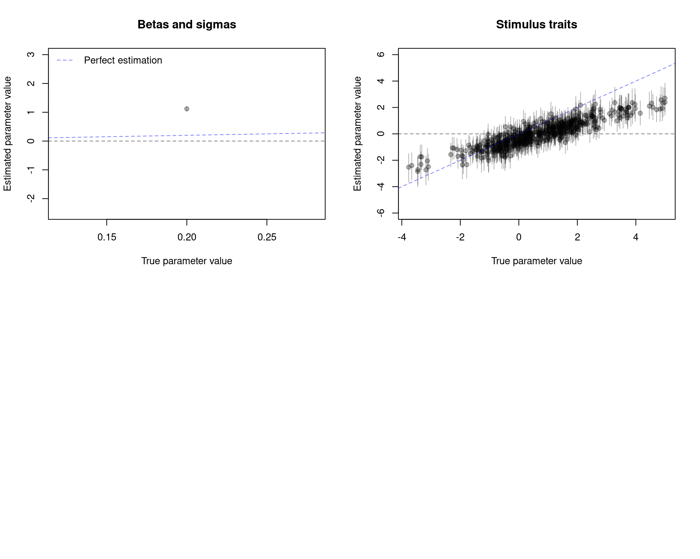
5.2.2.1 Data modeling: The ITCJ analysis 1
Second, we fit the first ITCJ model to the data using the specified priors.
The RMSE plots indicates that,

5.2.2.1 Data modeling: The ITCJ analysis 1
Third, we assess the in-sample predictive accuracy of the model.
The posterior predictive plots indicates that,
5.2.2.1 Data modeling: The ITCJ analysis 1
Third, we assess the in-sample predictive accuracy of the model.
The posterior predictive plots indicates that,
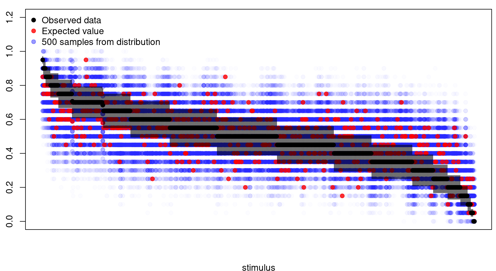
5.1.2.1 Data modeling: The ITCJ analysis 1
Third, we assess the in-sample predictive accuracy of the model.
The posterior predictive plots indicates that,
5.1.2.1 Data modeling: The ITCJ analysis 1
Fourth, we check if the model still shows signs of ‘trouble’
The influential points plots indicates that,
5.2.2.2 Data modeling: The ITCJ analysis 2
5.2.2.2 Data modeling: The ITCJ analysis 2
First, we need specify the appropriate priors for the model:
As seen in Section 11.3, the second ITCJ model is represented by,
\[ \begin{aligned} O_{R} & \overset{iid}{\sim} \text{Bernoulli} \left[ \text{inv_logit}( D_{R} ) \right] \\ D_{R} & = \left( T_{IA}[i,a] - T_{IA}[h,b] \right) \\ T_{IA} & = T_{I} + e_{IA} \\ T_{I} & = e_{I} \\ \boldsymbol{e} & \sim \text{Multi-Normal}( \boldsymbol{\mu}, \boldsymbol{\Sigma} ) \\ \boldsymbol{\Sigma} &= \boldsymbol{V} \boldsymbol{Q} \boldsymbol{V} \end{aligned} \]
\[ \begin{split} s_{A} &\sim \text{Beta_proportion}(0.5, 5); \\ \boldsymbol{\mu} &= [0, 0]^{T}; \; \boldsymbol{Q} = \begin{bmatrix} 1 & 0 \\ 0 & 1 \end{bmatrix} ; \; \boldsymbol{V} = \begin{bmatrix} s_{A} & 0 \\ 0 & 1 \end{bmatrix} \end{split} \]
Assumptions:
- Between-individual variability is assumed to be equal to \(1\). Thus, the prior distribution is used to define the scale of individual latent traits, as it is required in latent variable models [15].
- The within-individual (between-stimuli) variability \((s_{A})\) is assigned a weakly informative Beta-proportion prior with an average of \(\mu=0.5\) and a ‘sample size’ of \(M=5\). This reflects the expectation that the stimuli are more homogeneous than the individuals [25].
\(*\) This model is akin to the combination of Steps \(1\) and \(3\) from the CBTL analysis, without covariates for the individuals.
5.2.2.2 Data modeling: The ITCJ analysis 2
First, we need specify the appropriate priors for the model:
As a result of the prior assumptions, the prior predictive check shows that:
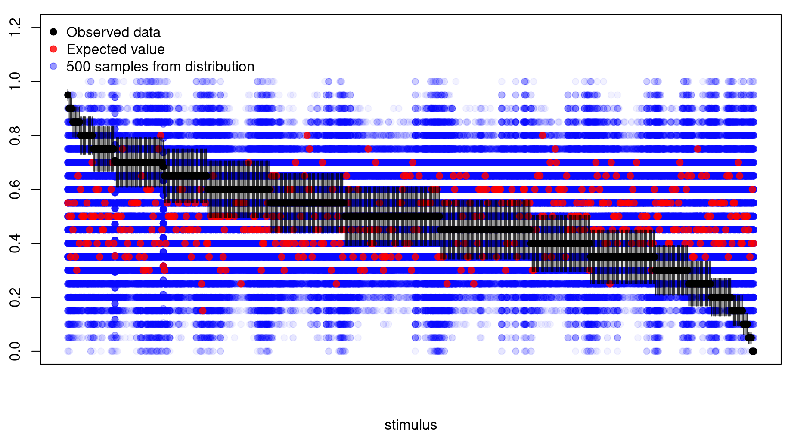
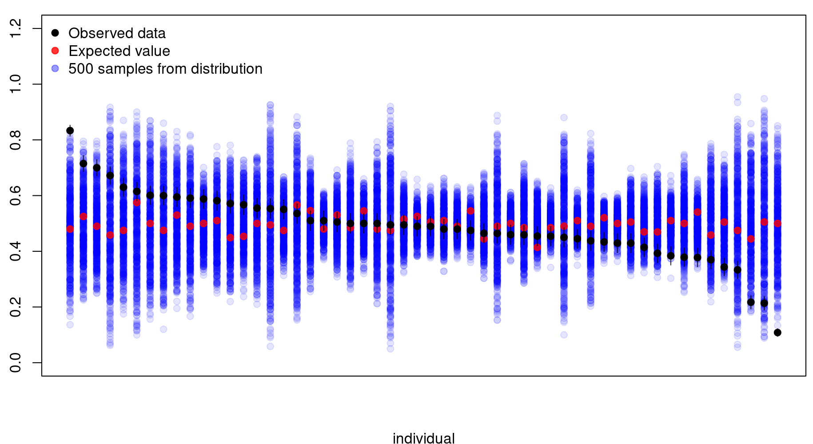
5.2.2.2 Data modeling: The ITCJ analysis 2
Second, we fit the second ITCJ model to the data using the specified priors.
The diagnostic statistics and plots indicate that,
5.2.2.2 Data modeling: The ITCJ analysis 2
Second, we fit the second ITCJ model to the data using the specified priors.
The parameter recovery plots indicates that,
5.2.2.2 Data modeling: The ITCJ analysis 2
Second, we fit the second ITCJ model to the data using the specified priors.
The RMSE plots indicates that,
5.2.2.2 Data modeling: The ITCJ analysis 2
Third, we assess the in-sample predictive accuracy of the model.
The posterior predictive plots indicates that,
5.2.2.2 Data modeling: The ITCJ analysis 2
Third, we assess the in-sample predictive accuracy of the model.
The posterior predictive plots indicates that,
5.2.2.2 Data modeling: The ITCJ analysis 2
Third, we assess the in-sample predictive accuracy of the model.
The posterior predictive plots indicates that,
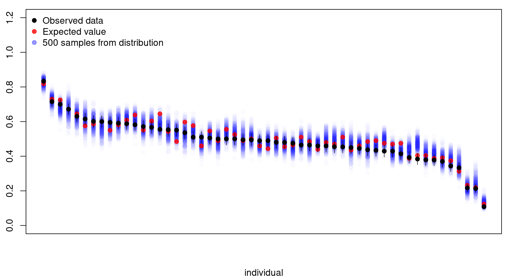
5.2.2.2 Data modeling: The ITCJ analysis 2
Fourth, we check if the model still shows signs of ‘trouble’
The influential points plots indicates that,
5.2.2.3 Data modeling: The ITCJ analysis 3
5.2.2.3 Data modeling: The ITCJ analysis 3
First, we need specify the appropriate priors for the model:
As seen in Section 11.4, the third ITCJ model is represented by,
\[ \begin{aligned} O_{R} & \overset{iid}{\sim} \text{Bernoulli} \left[ \text{inv_logit}( D_{R} ) \right] \\ D_{R} & = \left( T_{IA}[i,a] - T_{IA}[h,b] \right) \\ T_{IA} & = T_{I} + e_{IA} \\ T_{I} & = \beta_{XIc} XIc + \beta_{XId}[XId] + e_{I} \\ \boldsymbol{e} & \sim \text{Multi-Normal}( \boldsymbol{\mu}, \boldsymbol{\Sigma} ) \\ \boldsymbol{\Sigma} &= \boldsymbol{V} \boldsymbol{Q} \boldsymbol{V} \end{aligned} \]
\[ \begin{split} \beta_{XIc} &\sim \text{Normal}(0, 0.05); \\ \beta_{XId}[GI] &\sim \text{Normal}(0, 0.5); \\ s_{A} &\sim \text{Beta_proportion}(0.5, 5); \\ \boldsymbol{\mu} &= [0, 0]^{T}; \; \boldsymbol{Q} = \begin{bmatrix} 1 & 0 \\ 0 & 1 \end{bmatrix} ; \; \boldsymbol{V} = \begin{bmatrix} s_{A} & 0 \\ 0 & 1 \end{bmatrix} \end{split} \]
Assumptions:
- The effects of age and the hearing status groups on the mean latent trait of individuals has the same weakly informative prior as in the CBTL analysis,
- Between- and within-individual (between-stimuli) variability has the same prior as the previous ITCJ model.
\(*\) This model is akin to the combination of Steps \(1\) and \(3\) from the CBTL analysis, with covariates for the individuals.
5.2.2.3 Data modeling: The ITCJ analysis 3
First, we need specify the appropriate priors for the model:
As a result of the prior assumptions, the prior predictive check shows that:
5.2.2.3 Data modeling: The ITCJ analysis 3
Second, we fit the second ITCJ model to the data using the specified priors.
The diagnostic statistics and plots indicate that,
5.2.2.3 Data modeling: The ITCJ analysis 3
Second, we fit the third ITCJ model to the data using the specified priors.
The parameter recovery plots indicates that,
5.2.2.3 Data modeling: The ITCJ analysis 3
Second, we fit the third ITCJ model to the data using the specified priors.
The RMSE plots indicates that,
5.2.2.3 Data modeling: The ITCJ analysis 3
Third, we assess the in-sample predictive accuracy of the model.
The posterior predictive plots indicates that,
5.2.2.3 Data modeling: The ITCJ analysis 3
Third, we assess the in-sample predictive accuracy of the model.
The posterior predictive plots indicates that,
5.2.2.3 Data modeling: The ITCJ analysis 3
Third, we assess the in-sample predictive accuracy of the model.
The posterior predictive plots indicates that,
5.2.2.3 Data modeling: The ITCJ analysis 3
Fourth, we check if the model still shows signs of ‘trouble’
The influential points plots indicates that,
5.2.2.4 Data modeling: The ITCJ analysis 4
5.2.2.4 Data modeling: The ITCJ analysis 4
First, we need specify the appropriate priors for the model:
As seen in Section 11.5, the fourth ITCJ model is represented by,
\[ \begin{aligned} O_{R} & := f_{O}(D_{R}, S, C) \\ D_{R} & := f_{D}(T_{IA}, B_{J}) \\ T_{IA} & := f_{T}(T_{I}, e_{IA}) \\ T_{I} & := f_{T}(e_{I}) \\ B_{J} & := f_{B}(e_{J}) \\ e_{IA} & \:\bot\:\{ e_{I}, e_{J}\} \\ e_{I} & \:\bot\:\{ e_{J}\} \end{aligned} \]
\[ \begin{split} s_{A} &\sim \text{Beta_proportion}(0.5, 5); \\ \boldsymbol{\mu} &= [0, 0, 0]^{T}; \; \boldsymbol{Q} = \begin{bmatrix} 1 & 0 & 0 \\ 0 & 1 & 0 \\ 0 & 0 & 1 \end{bmatrix} ; \; \boldsymbol{V} = \begin{bmatrix} s_{A} & 0 & 0 \\ 0 & 1 & 0 \\ 0 & 0 & 1 \end{bmatrix} \end{split} \]
Assumptions:
- Between- and within-individual (between-stimuli) variability has the same prior as the previous ITCJ models,
- Between-judge variability is assumed to be equal to \(1\). Thus, the prior distribution is used to define the scale of judges latent biases, as it is required in latent variable models [15].
\(*\) This model is akin to the combination of all three steps from the CBTL analysis, without any covariates for individuals or judges. However, technically this is no longer a BTL model.
5.2.2.4 Data modeling: The ITCJ analysis 4
First, we need specify the appropriate priors for the model:
As a result of the prior assumptions, the prior predictive check shows that:
5.2.2.4 Data modeling: The ITCJ analysis 4
Second, we fit the second ITCJ model to the data using the specified priors.
The diagnostic statistics and plots indicate that,
5.2.2.4 Data modeling: The ITCJ analysis 4
Second, we fit the fourth ITCJ model to the data using the specified priors.
The parameter recovery plots indicates that,
5.2.2.4 Data modeling: The ITCJ analysis 4
Second, we fit the fourth ITCJ model to the data using the specified priors.
The RMSE plots indicates that,
5.2.2.4 Data modeling: The ITCJ analysis 4
Third, we assess the in-sample predictive accuracy of the model.
The posterior predictive plots indicates that,
5.2.2.4 Data modeling: The ITCJ analysis 4
Third, we assess the in-sample predictive accuracy of the model.
The posterior predictive plots indicates that,
5.2.2.4 Data modeling: The ITCJ analysis 4
Third, we assess the in-sample predictive accuracy of the model.
The posterior predictive plots indicates that,
5.2.2.4 Data modeling: The ITCJ analysis 4
Fourth, we check if the model still shows signs of ‘trouble’
The influential points plots indicates that,
5.2.2.5 Data modeling: The ITCJ analysis 5
5.2.2.5 Data modeling: The ITCJ analysis 5
First, we need specify the appropriate priors for the model:
As seen in Section 11.6, the fifth ITCJ model is represented by,
\[ \begin{aligned} O_{R} & \overset{iid}{\sim} \text{Bernoulli} \left[ \text{inv_logit}( D_{R} ) \right] \\ D_{R} & = \left( T_{IA}[i,a] - T_{IA}[h,b] \right) \\ T_{IA} & = T_{I} + e_{IA} \\ T_{I} & = \beta_{XIc} XIc + \beta_{XId}[XId] + e_{I} \\ B_{J} & = \beta_{ZJd}[ZJd] + e_{J} \\ \boldsymbol{e} & \sim \text{Multi-Normal}( \boldsymbol{\mu}, \boldsymbol{\Sigma} ) \\ \boldsymbol{\Sigma} &= \boldsymbol{V} \boldsymbol{Q} \boldsymbol{V} \end{aligned} \]
\[ \begin{split} \beta_{XIc} &\sim \text{Normal}(0, 0.05); \\ \beta_{XId}[GI] &\sim \text{Normal}(0, 0.5); \\ \beta_{ZJd}[GJ] &\sim \text{Normal}(0, 0.3); \\ s_{A} &\sim \text{Beta_proportion}(0.5, 5); \\ \boldsymbol{\mu} &= [0, 0, 0]^{T}; \; \boldsymbol{Q} = \begin{bmatrix} 1 & 0 & 0 \\ 0 & 1 & 0 \\ 0 & 0 & 1 \end{bmatrix} ; \; \boldsymbol{V} = \begin{bmatrix} s_{A} & 0 & 0 \\ 0 & 1 & 0 \\ 0 & 0 & 1 \end{bmatrix} \end{split} \]
Assumptions:
- The effects of age and the hearing status groups on the mean latent trait of individuals has the same weakly informative prior as in the CBTL analysis,
- The effects of judges groups on the mean latent bias has the same weakly informative prior as in the CBTL analysis,
- Between- and within-individual (between-stimuli) variability has the same prior as the previous ITCJ models,
- Between-judge variability has the same prior as the previous ITCJ models.
\(*\) This model is akin to the combination of all three steps from the CBTL analysis, with covariates for individuals and judges. However, this is no longer a BTL model.
5.2.2.5 Data modeling: The ITCJ analysis 5
First, we need specify the appropriate priors for the model:
As a result of the prior assumptions, the prior predictive check shows that:
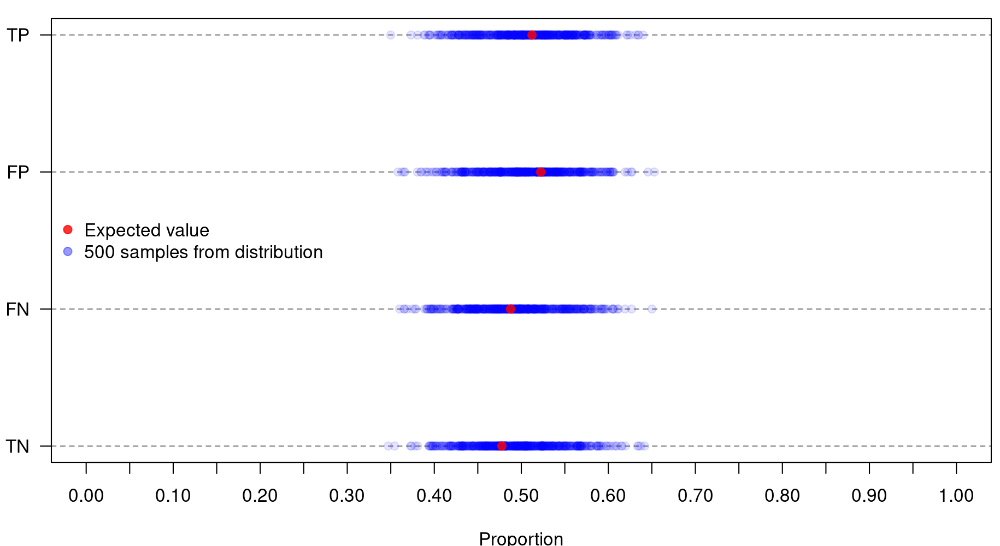
5.2.2.5 Data modeling: The ITCJ analysis 5
Second, we fit the second ITCJ model to the data using the specified priors.
The diagnostic statistics and plots indicate that,
5.2.2.5 Data modeling: The ITCJ analysis 5
Second, we fit the fifth ITCJ model to the data using the specified priors.
The parameter recovery plots indicates that,
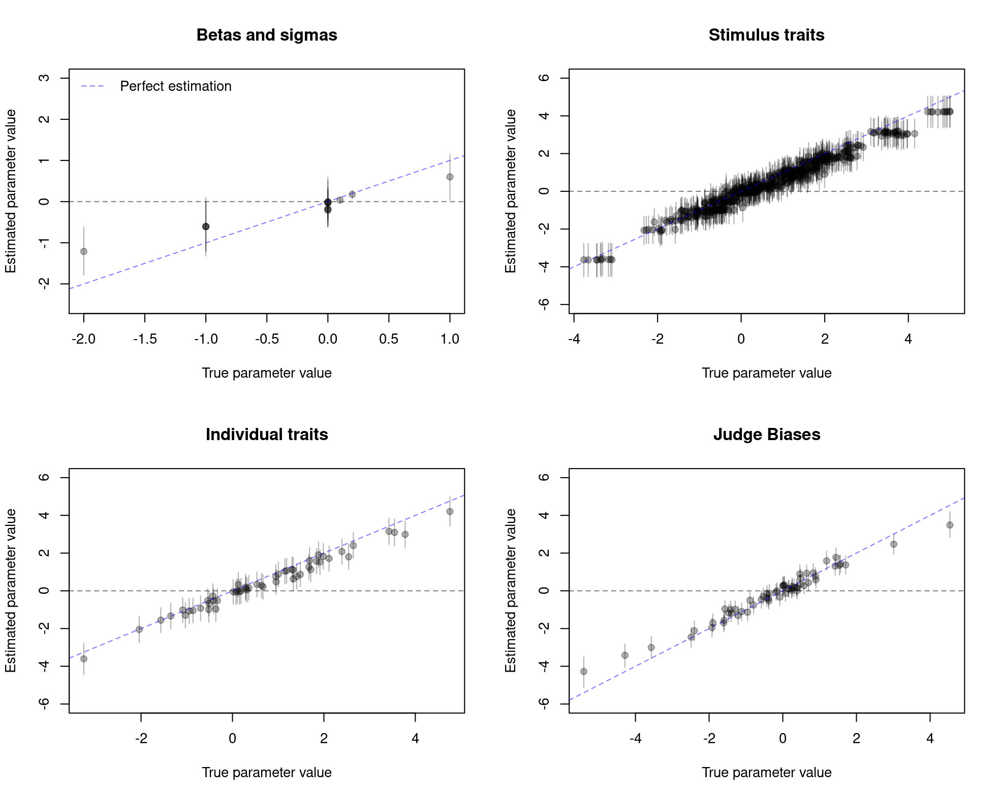
5.2.2.5 Data modeling: The ITCJ analysis 5
Second, we fit the fifth ITCJ model to the data using the specified priors.
The RMSE plots indicates that,
5.2.2.5 Data modeling: The ITCJ analysis 5
Third, we assess the in-sample predictive accuracy of the model.
The posterior predictive plots indicates that,
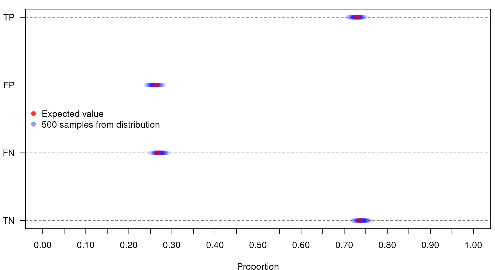
5.2.2.5 Data modeling: The ITCJ analysis 5
Third, we assess the in-sample predictive accuracy of the model.
The posterior predictive plots indicates that,
5.2.2.5 Data modeling: The ITCJ analysis 5
Third, we assess the in-sample predictive accuracy of the model.
The posterior predictive plots indicates that,
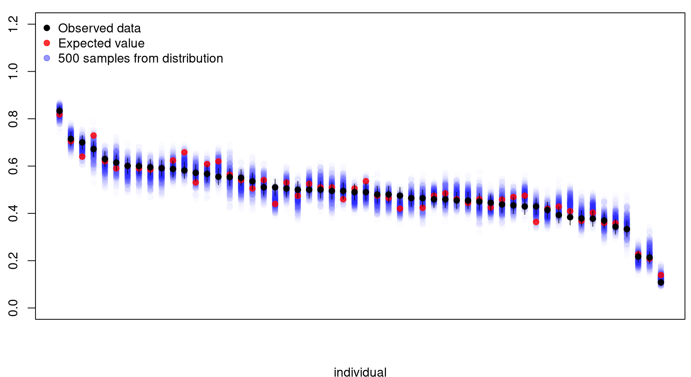
5.2.2.5 Data modeling: The ITCJ analysis 5
Fourth, we check if the model still shows signs of ‘trouble’
The influential points plots indicates that,

5.2.2.6 Data modeling: The ITCJ analysis 6
5.2.2.6 Data modeling: The ITCJ analysis 6
First, we need specify the appropriate priors for the model:
As seen in Section 11.7, the sixth ITCJ model is represented by,
\[ \begin{aligned} O_{R} & \overset{iid}{\sim} \text{Bernoulli} \left[ \text{inv_logit}( D_{R} ) \right] \\ D_{R} & = \left( T_{IA}[i,a] - T_{IA}[h,b] \right) \\ T_{IA} & = T_{I} + e_{IA} \\ T_{I} & = \beta_{XIc} XIc + \beta_{XId}[XId] + e_{I} \\ B_{J} & = \beta_{ZJd}[ZJd] + e_{J} \\ \boldsymbol{e} & \sim \text{Multi-Normal}( \boldsymbol{\mu}, \boldsymbol{\Sigma} ) \\ \boldsymbol{\Sigma} &= \boldsymbol{V} \boldsymbol{Q} \boldsymbol{V} \end{aligned} \]
\[ \begin{split} \beta_{XIc} &\sim \text{Normal}(0, 0.05); \\ \beta_{XId}[GI] &\sim \text{Normal}(0, 0.5); \\ \beta_{ZJd}[GJ] &\sim \text{Normal}(0, 0.3); \\ hs_{I} &\sim \text{Dirichlet}(5, GI) \; \rightarrow \; s_{XI} = GI \cdot hs_{I}; \\ hs_{J} &\sim \text{Dirichlet}(5, GJ); \; \rightarrow \; s_{ZJ} = GJ \cdot hs_{I}; \\ s_{A} &\sim \text{Beta_proportion}(0.5, 5); \\ \boldsymbol{\mu} &= [0, 0, 0]^{T}; \; \boldsymbol{Q} = \begin{bmatrix} 1 & 0 & 0 \\ 0 & 1 & 0 \\ 0 & 0 & 1 \end{bmatrix}; \; \boldsymbol{V} = \begin{bmatrix} s_{A} & 0 & 0 \\ 0 & s_{XI} & 0 \\ 0 & 0 & s_{ZJ} \end{bmatrix} \end{split} \]
Assumptions:
- The effects of age and the hearing status groups on the mean latent trait of individuals has the same weakly informative prior as in the CBTL analysis,
- The effects of judges groups on the mean latent bias has the same weakly informative prior as in the CBTL analysis,
- Within-individual (between-stimuli) variability has the same prior as the previous ITCJ models.
- Between-individual and between-judges variability are now constraint to add to one (i.e., a simplex) across hearing status and judges groups, respectively. This requirement is enforced through a weakly informative Dirichlet prior.
\(*\) This model has no equivalent in the current CJ literature.
5.2.2.6 Data modeling: The ITCJ analysis 6
First, we need specify the appropriate priors for the model:
As a result of the prior assumptions, the prior predictive check shows that:
5.2.2.6 Data modeling: The ITCJ analysis 6
Second, we fit the second ITCJ model to the data using the specified priors.
The diagnostic statistics and plots indicate that,
5.2.2.6 Data modeling: The ITCJ analysis 6
Second, we fit the sixth ITCJ model to the data using the specified priors.
The parameter recovery plots indicates that,
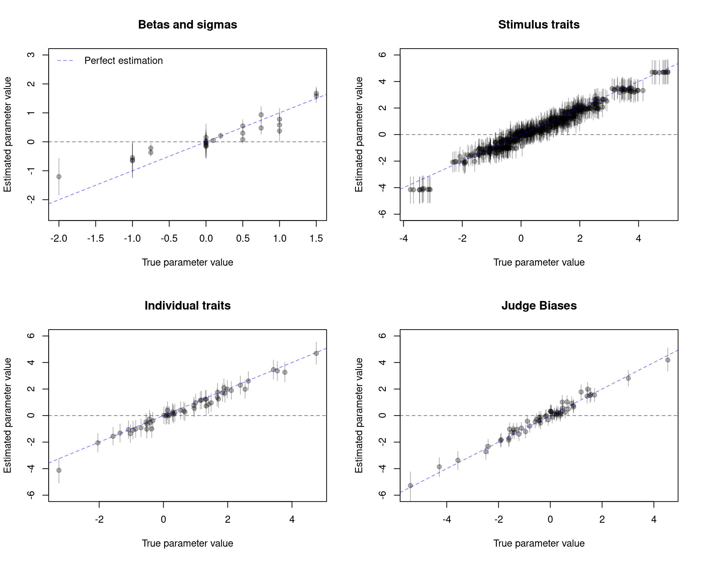
5.2.2.6 Data modeling: The ITCJ analysis 6
Second, we fit the sixth ITCJ model to the data using the specified priors.
The RMSE plots indicates that,
5.2.2.6 Data modeling: The ITCJ analysis 6
Third, we assess the in-sample predictive accuracy of the model.
The posterior predictive plots indicates that,
5.2.2.6 Data modeling: The ITCJ analysis 6
Third, we assess the in-sample predictive accuracy of the model.
The posterior predictive plots indicates that,
5.2.2.6 Data modeling: The ITCJ analysis 6
Third, we assess the in-sample predictive accuracy of the model.
The posterior predictive plots indicates that,
5.2.2.6 Data modeling: The ITCJ analysis 6
Fourth, we check if the model still shows signs of ‘trouble’
The influential points plots indicates that,
5.3 Model comparison
5.3 Model comparison
Finally, we compare the approximate out-of-sample fit for all ITCJ models.
The approximate out-of-sample fit comparison indicates that,
- There is a clear difference in between ITCJ models \(1-3\) (Bayesian equivalent of the BTL model) and ITCJ models \(4-6\), which account for judges’ biases, even considering the parameter penalty!,
- ITCJ model \(4\) and \(5\) show similar performance, this implies that adding covariates to model \(4\) (model \(5\)) does not substantially improves its approximate out-of-sample fit,
- ITCJ model \(6\) has the best relative approximate out-of-sample fit.
5.3 Model comparison
Also, we compare and interpret the parameter estimates:
| Parameter table | |||||||
|---|---|---|---|---|---|---|---|
| variable | value | mean | median | sd | q5 | q95 | rmse |
| bXIc | 0.10 | 0.00 | 0.00 | 0.05 | −0.08 | 0.08 | 0.11 |
| bXId[1] | 1.00 | −0.22 | −0.21 | 0.36 | −0.80 | 0.37 | 1.27 |
| bXId[2] | 0.00 | −0.15 | −0.15 | 0.46 | −0.90 | 0.60 | 0.48 |
| bXId[3] | −1.00 | −0.41 | −0.41 | 0.46 | −1.16 | 0.36 | 0.75 |
| bZJd[1] | 0.00 | 0.01 | 0.01 | 0.05 | −0.07 | 0.09 | 0.05 |
| bZJd[2] | 0.00 | 0.00 | 0.00 | 0.04 | −0.07 | 0.07 | 0.04 |
| bZJd[3] | 0.00 | −0.01 | −0.01 | 0.02 | −0.05 | 0.03 | 0.03 |
| sA[1] | 0.20 | 2.37 | 2.37 | 0.08 | 2.25 | 2.50 | 2.68 |
| sI[1] | 1.50 | 2.87 | 2.84 | 0.30 | 2.42 | 3.38 | 0.88 |
| sK[1]1 | 0.10 | 0.35 | 0.35 | 0.00 | 0.34 | 0.36 | 0.04 |
| sJ[1] | 0.50 | 0.14 | 0.14 | 0.01 | 0.12 | 0.16 | 0.15 |
| 1 No equivalent parameter in original simulation. | |||||||
| Parameter table | |||||||
|---|---|---|---|---|---|---|---|
| variable | value | mean | median | sd | q5 | q95 | rmse |
| bXIc | 0.10 | 0.05 | 0.05 | 0.04 | −0.03 | 0.12 | 0.07 |
| bXId[1] | 1.00 | 0.58 | 0.58 | 0.35 | 0.00 | 1.16 | 0.55 |
| bXId[2] | 0.00 | 0.04 | 0.03 | 0.35 | −0.53 | 0.61 | 0.35 |
| bXId[3] | −1.00 | −0.62 | −0.63 | 0.37 | −1.22 | −0.01 | 0.53 |
| bZJd[1] | 0.00 | −0.04 | −0.04 | 0.17 | −0.32 | 0.23 | 0.18 |
| bZJd[2] | 0.00 | −0.04 | −0.04 | 0.20 | −0.37 | 0.28 | 0.20 |
| bZJd[3] | 0.00 | −0.16 | −0.17 | 0.20 | −0.49 | 0.17 | 0.26 |
| sA[1] | 0.20 | 0.21 | 0.21 | 0.06 | 0.10 | 0.30 | 0.06 |
| sI[1] | 1.50 | 1.59 | 1.58 | 0.15 | 1.35 | 1.85 | 0.17 |
| sI[2] | 0.75 | 0.48 | 0.47 | 0.15 | 0.26 | 0.74 | 0.31 |
| sI[3] | 0.75 | 0.94 | 0.93 | 0.17 | 0.67 | 1.22 | 0.25 |
| sJ[1] | 0.50 | 0.55 | 0.54 | 0.12 | 0.36 | 0.76 | 0.13 |
| sJ[2] | 1.00 | 0.78 | 0.78 | 0.13 | 0.57 | 1.00 | 0.26 |
| sJ[3] | 1.50 | 1.68 | 1.67 | 0.13 | 1.46 | 1.89 | 0.22 |
5.3 Model comparison
Also, we compare and interpret the parameter estimates:
| Contrast table | |||||||
|---|---|---|---|---|---|---|---|
| variable | value | mean | median | sd | q5 | q95 | rmse |
| bXId[2] - bXId[1] | −1.00 | 0.07 | 0.07 | 0.57 | −0.87 | 1.00 | 1.21 |
| bXId[3] - bXId[1] | −2.00 | −0.19 | −0.19 | 0.58 | −1.13 | 0.78 | 1.90 |
| bXId[3] - bXId[2] | −1.00 | −0.26 | −0.26 | 0.63 | −1.30 | 0.78 | 0.98 |
| bZJd[2] - bZJd[1] | 0.00 | −0.01 | −0.01 | 0.07 | −0.12 | 0.10 | 0.07 |
| bZJd[3] - bZJd[1] | 0.00 | −0.02 | −0.02 | 0.05 | −0.11 | 0.06 | 0.06 |
| bZJd[3] - bZJd[2] | 0.00 | −0.01 | −0.01 | 0.05 | −0.09 | 0.07 | 0.05 |
| Contrast table | |||||||
|---|---|---|---|---|---|---|---|
| variable | value | mean | median | sd | q5 | q95 | rmse |
| bXId[2] - bXId[1] | −1.00 | −0.55 | −0.54 | 0.29 | −1.03 | −0.07 | 0.54 |
| bXId[3] - bXId[1] | −2.00 | −1.20 | −1.21 | 0.39 | −1.84 | −0.57 | 0.89 |
| bXId[3] - bXId[2] | −1.00 | −0.66 | −0.66 | 0.36 | −1.25 | −0.05 | 0.50 |
| bZJd[2] - bZJd[1] | 0.00 | 0.00 | 0.00 | 0.26 | −0.43 | 0.43 | 0.26 |
| bZJd[3] - bZJd[1] | 0.00 | −0.12 | −0.12 | 0.26 | −0.55 | 0.31 | 0.29 |
| bZJd[3] - bZJd[2] | 0.00 | −0.12 | −0.13 | 0.28 | −0.58 | 0.34 | 0.30 |
| sI[2] - sI[1] | −0.75 | −1.11 | −1.11 | 0.25 | −1.51 | −0.69 | 0.44 |
| sI[3] - sI[1] | −0.75 | −0.65 | −0.66 | 0.28 | −1.11 | −0.18 | 0.30 |
| sI[3] - sI[2] | 0.00 | 0.46 | 0.47 | 0.28 | −0.02 | 0.90 | 0.54 |
| sJ[2] - sJ[1] | 0.50 | 0.23 | 0.23 | 0.22 | −0.13 | 0.58 | 0.34 |
| sJ[3] - sJ[1] | 1.00 | 1.13 | 1.13 | 0.22 | 0.75 | 1.49 | 0.26 |
| sJ[3] - sJ[2] | 0.50 | 0.90 | 0.90 | 0.23 | 0.50 | 1.27 | 0.46 |
6. Discussion
6. Discussion
This study fulfills its two overarching goals, that is,
Showing how apply the ITCJ model to a simulated dataset,
A tutorial component, offering detailed guidance on data simulation, prior and model specification, estimation, and interpretation using the software
RandStan.Evaluating whether the approach yield accurate and reliable trait estimates and inference parameters,
A model validation component benchmarked against the CBTL analysis.
6. Discussion
The CBTL analysis results provide preliminary evidence that,
Researchers cannot treat “sample-freeness” as an inherent property of the BTL model, contrary to previous beliefs [3, 6]. Instead, the property depends on the specific data under analysis.
When judges exhibit bias, the CBTL analysis fails to capture the complexity of the traits [3, 6, 7, 9], producing inaccurate and unreliable estimates [46–49]. This limitation is particularly evident in the estimation of inference parameters and judges’ biases.
The common CJ practice of separating trait estimation from hypothesis testing [11, 12, 14, 50–53], introduces bias and reduces the reliability of inferences [48, 49, 54].
The BTL model is overconfident when predicting comparison outcomes, as shown by the posterior predictive checks based on the expected values.
6. Discussion
Moreover, the CBTL analysis results also provide preliminary evidence that,
Despite its statistical definition as an outlier detection tool [8], misfit analysis fail to detect ‘extreme’ cases;
Despite its conceptual definition as a “lack-of-consensus” identification tool [4, 10], misfit analysis does not consistently classify all stimuli, judges or individual exhibiting consensus or lack of consensus (see Figure 24);
Note: The definition of consensus aligns with the microeconomics’ concept of transitivity, that is, if \(A \succ B \succ C\), then \(A \succ C\) [55]. As Pollit [10] explains: “If a portfolio’s WMS exceeds the criterion of mean plus two standard deviations, this means the judges did not judge it consistently, some considering it ‘better’ than others did. Significant portfolio misfit indicates a specific difference between judges in how they would rank order the portfolios, arising from a difference in how they understand or value the trait they are trying to assess.”
In fact, as show in this study, simple features of the data-generating process can produce lack of consensus or transitivity. For example, \(\text{IA}[6,3] \succ \text{IA}[6,7] \succ \text{IA}[31,6]\), but \(\text{IA}[31,6] \succ \text{IA}[6,3]\) (see Figure 24);
Then, as expected, excluding misfitting stimuli and judges in a second model fit [4, 10] does not improve trait estimation nor inferences, as the model continues to struggle with ‘extreme’ stimuli and unmodeled data features.
6. Discussion
In contrast, results from the ITCJ analysis indicate that,
The frequentist BTL model and its equivalent Bayesian ITCJ models (models \(1-3\)) show similar insufficient fit; however, the ITCJ models exhibit a slightly better recovery performance due to the regularizing influence of weakly informative priors (see parameter recovery and RMSE plots).
Note: ITCJ models \(1-3\) can be estimated with the
BTm()function; however, the practice is largely absent in the current CJ literature.Incorporating the hierarchical structure of stimuli and accounting for judges’ biases (ITCJ model \(4\)) improves the prediction of comparison outcomes by up to \(10\) percentage points in the overall True Positives (TP) and True Negatives (TN), as indicated by posterior predictive checks, more than including covariates in the model (model \(3\)).
Expanding the model to include the hierarchical structure of stimuli, judges’ biases, heterogeneity in discriminal dispersions, and measurement error in inferences (ITCJ model \(6\)) enhances both the accuracy and reliability of all trait estimates and inference parameters.
ITCJ model \(6\) enables to test other inferences not available under the CBTL analysis
6.1 Future research directions
6.1 Future research directions
Building upon Rivera et al. [8], four research avenues deserve attention.
Sampling and comparison mechanisms,
This study used random sampling and comparison algorithms. Future work should assess how alternative sampling strategies and comparison algorithms affect the accuracy and reliability of trait estimates and inference parameters, e.g.,
- what happens when data is not randomly sampled or when comparison are not random?
- is the Adaptive Comparative Judgment (ACJ) algorithm random or non-random?
Validity of ‘misfit’ analysis,
Preliminary evidence in this study suggest that ‘misfit’ analysis often miss classifies or fails to classify cases. Future work should then determine, e.g.,
- what ‘misfit’ analysis actually diagnose?
- are its conceptual and statistical definitions aligned?
- does the analysis function as an outlier detection tool?
- does it holds real analytical value in the CJ workflow?
6.1 Future research directions
Building upon Rivera et al. [8], four research avenues deserve attention.
Sources of judges biases,
Evidence from this study indicates that researchers need to move beyond the traditional BTL model, explicitly integrating judges’ biases in CJ analyses. This opens the door for future studies to investigate which factors influence these biases. For instance,
- do gender, age, culture, income, education, training, or expertise affect judges’ biases?,
- how many stimuli/individuals and judges are needed to support specific inferences?
Prospective power and replication studies!
Considering the preliminary evidence of this study,
- in any random sample, what is the probability that at least one judge is biased?
- if that probability is not low, how confident can researchers be that their CJ data are free of judges’ biases?
6.2 Study limitations
6.2 Study limitations
Despite the relevance of its results, this study has some limitations:
- The empirical test of the ITCJ analyses relies on a single, ‘small’ simulated dataset,
- The assessment of out-of-sample fit depends on approximate measures, such as PSIS,
- The analysis did not use additional variables from the simulated data to evaluate the the models’ ability to not reject null hypotheses when the null is true (except for judges’ groups),
- The study did not explicitly design or plan the evaluation of the misfit analysis properties.
7. Conclusion
7. Conclusion
This study achieves its two main goals,
- It provides a practical tutorial in
RandStanon how to apply the ITCJ analysis to a CJ data, - It validates the model’s ability to produce accurate and reliable trait estimates and inference parameters compared to the CBTL analysis.
The results of the study indicates that,
Researchers should move beyond the CBTL analysis toward a more systematic, integrated approach for trait estimation and inference, as exemplified by the ITCJ analysis [8].
There are several promising directions for future research.
Licence
Licence
All the code that is original to this study and not attributed to any other authors is copyrighted by Jose Manuel Rivera Espejo and released under the new BSD-3-Clause license.
Appendix A - From Design to Sample: Step 2
Appendix A - From Design to Sample: Step 2
The study generates a synthetic random sample and comparison datasets from the conceptual population simulated in Step 1.
More specifically, for the sampling \((S)\) and comparison \((C)\) mechanisms shown in Figure 5, sample size calculations were conducted assuming:
- That “reaching” one children from the HI-HA or HI-CI groups costs ten times \((10x)\) more that “reaching” one NH child.
- Three criteria for individual sample size selection: (1) a minimum power to detect \(\beta_{XIc}\) of \(80\%\) \((1-\beta)\), (2) a minimum power to detect differences in \(bXId\) of \(80\%\) \((1-\beta)\), and (3) a maximum efficiency possible, i.e., less and more balanced sample sizes are preferred.
- That “hiring” one AU judge cost five times \((5x)\) as much as “hiring” an IL judge, while “hiring” one PT judge cost three times \((3x)\) as much as an IL judge.
- Three criteria for judge sample size selection: (1) a minimum confidence of \(95\%\) \((1 - \alpha)\) to not reject \(\beta_{ZJc} = 0\), (2) a minimum confidence of \(95\%\) \((1 - \alpha)\) to not reject differences in \(\beta_{ZJd}\) equal to zero, and (3) maximum efficiency, i.e., less and more balanced sample sizes are preferred.
Appendix A - From Design to Sample: Step 2

Appendix A - From Design to Sample: Step 2